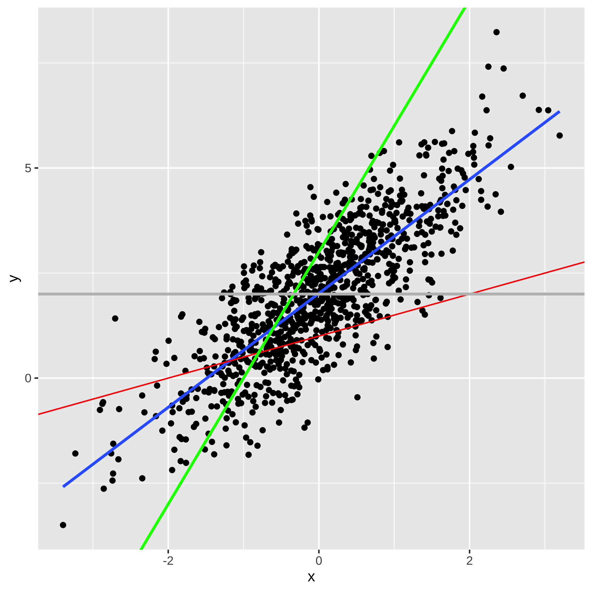

Capítulo 6 - CEF
Em geral, iremos simplificar a notação usando variáveis com uma letra. Assim, a variável dependente, salário (ou log do salário), será dado por \(Y\), como constuma ser feito. Já os preditores, como gênero ou raça, por \(X_1, X_2\) etc. O subscrito indica que é uma variável diferente. Assim, a esperança condicional pode ser reescrita para muitas variáveis preditoras como:
\[\begin{equation} \mathbb{E}[Y| X_1 = x_1, X_2 = x_2, ..., X_k=x_k] = m(x_1, x_2, ..., x_k) \end{equation}\]
A essa esperança damos o nome de Função de Esperança Condicional (Conditional Expectation Function, em inglês). Usaremos a sigla em inglês, CEF, para nos referirmos à Função de Esperança Condicional. A CEF é uma função porque seu valor varia a depender dos valores particulares que \(X_1, X_2, ..., X_k\) assumem. Nós vimos que a raça pode ser, por exemplo, branca, preta etc. E a esperança condicional muda para cada valor das variáveis. O que é típico de uma função. Por fim, usamos a letra \(m\) do lado direito da equação porque estamos falamos da média de \(Y\) quando a CEF assume valores $x_1, x_2, …, x_k). Por fim, às vezes é útil pensar na CEF como uma função das variáveis aleatórias \(X_1, X_2, ..., X_k\), de modo que escrevemos simplesmente:
\[ \mathbb{E}[Y| X_1, X_2, ..., X_k] \]
Se tivermos apenas um único preditor, \(X\), então a CEF é dada por:
\[ \mathbb{E}[Y| X] = m(X) \]
6.1 Erro da CEF
Quando estamos fazendo previsões sobre \(Y\) a partir da CEF, cometemos um erro. Esse erro (para o caso de uma variável) é definido por:
\[ e = Y - m(X) \]
Se rearranjarmos, isso nos leva à seguinte equação: \[ Y = m(X) + e \] Notem que o erro \(e\) depende de \(X\) e \(Y\) e, portanto, é também uma variável aleatória. E uma propriedade (não um pressuspoto) da CEF é que o erro \(e\) tem esperança condiconal a \(X\) igual a zero.
6.2 Simulando para entender a CEF
Vamos fazer simulações no R para entender o erro da CEF. Suponha que \(Y = X^2 + U\), em que \(U \sim norm(0,1)\) e \(X \sim norm(0,1)\).
set.seed(234)
n <- 1000
x <- rnorm(n)
u <- rnorm(n)
y <- x^2 + u
m1 <- mean(y)
m2 <- median(y)
erro1 <- y - m1
erro2 <- y - m2
print(sum(erro1^2))## [1] 2987.139## [1] 3062.869Nós imprimimos os dois erros quadráticos médios calculados, um usando a média de \(Y\) como minha estimativa, e outro usando a mediana. A média teve um desempenho melhor. De maneira geral, é possível mostrar que a média é é a melhor estimativa não condicional possível.
6.3 Propriedades da CEF
Vejam que:
\[ \mathbb{E}[e] = \mathbb{E}[Y - m(X)] \]
e
\[ \mathbb{E}[e|X] = \mathbb{E}[Y - m(X)|X] \] Pela propriedade de lineraridade da esperança, temos então:
\[ \mathbb{E}[e|X] = \mathbb{E}[Y|X] - \mathbb{E}[m(X)|X] \] Do que segue: \[ \mathbb{E}[e|X] = m(X) - \mathbb{E}[m(X)|X] \]
6.3.1 A Esperança do Erro Condicional a X é zero
Existe um teorema, que não irei demonstrar, chamando de teorema do condicionamento, que diz que em situações como \(\mathbb{E}[m(X)|X]\), isso é igual e \(m(X)\). O que torna nossa equação igual a zero. Ou seja:
\[ \mathbb{E}[e|X] = m(X) - m(X) = 0 \]
6.3.2 A esperança (não-condicional) do erro é zero.
E existe um outro teorema, chamdo de lei das esperanças iteradas (Law of Iterated Expectations) que diz que a esperança da esperança condicional é a esperança não-condicional. Ou seja, \(\mathbb{E}[\mathbb{E}[Y\|X]] = \mathbb{E}[Y]\). Utilizando esse fato, temos que a esperança não-condicional do erro também é zero.
\[ \mathbb{E}[e] = \mathbb{E}[\mathbb{E}[e|X]] = \mathbb{E}[0] = 0 \]
6.3.2.1 Intuição da LIE
Como a LIE é muito importante em muitas demonstração de estatística, vale a penda dar pelo menos a intuição de sua validade. Para isso, vamos usar a lei da probabilidade total. Digamos que tenho um dado de 6 faces, dado \(A\), e outro de 4 faces, o dado \(B\). E \(Y\) é o valor que sai de jogar um dado e \(X\) é qual dado eu joguei. Queremos mostrar que:
\[ \mathbb{E}[\mathbb{E}[Y|X]] = \mathbb{E}[Y] \] A média das médias condicionais é dado pela média quando escolho o dado A (vezes sua probabilidade) mais a média quando escolho o dado B (vezes sua probabilidade).
Se \(X = A\), o dado de 6 faces, então \(\mathbb{E}[Y|X=A]]\), isto é, a média do valor do dado é \((1+2+3+4+5+6)/6 = 3.5\)
Se \(X = B\), o dado de 4 faces, então \(\mathbb{E}[Y|X=A]]\), isto é, a média do valor do dado é \((1+2+3+4)/4 = 2.5\)
Se eu escolher cada dado aleatoriamente, isto é, com probabilidade 50%, então o valor médio de \(Y\), dado por \(\mathbb{E}[y]\) é simplesmente \(3.5*.5 + 3.5*.5 = 3\). .
No caso dos salários condicional ao gênero, efetivamente o que estamos dizendo é o seguinte:
\[ \mathbb{E}[log(salário)|gênero = homem]*P[gênero = homem] + \mathbb{E}[log(salário)|gênero = mulher]*P[gênero = mulher] \]
6.3.3 O erro da CEF é não-correlacionado com X
Por fim, uma última propriedade que não iremos demonstrar é que o erro da CEF é não-correlacionado com qualquer função de \(X\). Formalmente isso é formulado como \(\mathbb{E}[h(x)*e] = 0\). Em particular, se \(h(x)=x\), então \(\mathbb{E}[x*e] = 0\). Esse resultado implica que o erro é não-correlacionado com \(X\) (ou qualquer função de \(X\)). Dizemos que o erro é independente na média de \(X\), ou seja, \(\mathbb{E}[e|X]=0\) e isso implica que o erro não é correlacionado com x.
Vejam que já sabemos que \(\mathbb{E}[e]=0\), portanto, \(\mathbb{E}[e|X]=0\) é uma forma de dizer que a média do erro condicional a \(X\) é a mesma coisa que a média do erro sem condicionar em \(X\). Em outras palavras, a informação de \(X\) não muda minha estimativa da média do erro. Voltemos para o exemplo dos dados. Agora, suponha que tenho dois dados de \(6\) faces. Nesse caso, saber que escolhi o dado \(A\) não muda a médiade \(Y\), pois será igualmente \(3.5\). É fácil ver que não há correlação entre \(X\) e \(Y\) nesse caso.
Aqui tem uma intuição de porque uma variável ser independente na média significa que não é correlacionada. Suponha que eu tenho uma medida da altura de pessoas, alguma medida do vocabulário delas e suas idades. Condicional à idade, saber a altura de uma pessoa não diz nada sobre o vocabulário dela (e vice-versa). Isso significa que não estão correlacionadas.
Nós vimos que o log do salário (por hora) médio não condicional \(\mathbb{E}[log(salário)]\) é 2.15. A tabela abaixo quebra esse valor por gênero, juntamente com a frequência relativa de categoria:
table2 <- df %>%
mutate(total_n = sum(V1028),
log_renda = log(renda)) %>%
group_by(genero) %>%
summarise(salario = round(weighted.mean(salario, w=V1028),2), freq=sum(V1028)/total_n)
table2 %>%
head(10) %>%
kable()| genero | salario | freq |
|---|---|---|
| Homem | 14.72 | 0.5789522 |
| Homem | 14.72 | 0.5789522 |
| Homem | 14.72 | 0.5789522 |
| Homem | 14.72 | 0.5789522 |
| Homem | 14.72 | 0.5789522 |
| Homem | 14.72 | 0.5789522 |
| Homem | 14.72 | 0.5789522 |
| Homem | 14.72 | 0.5789522 |
| Homem | 14.72 | 0.5789522 |
| Homem | 14.72 | 0.5789522 |
Vejam que:
\[ \mathbb{E}[log(salário)] = \mathbb{E}[log(salário)|homem]*p(homem) + \mathbb{E}[log(salário)|mulher]*p(mulher) \]
\[ x*p(x) + y*p(y) = x1*y1 = 2.15 \]
Como vimos, é sempre verdade que (para o caso de \(X\) assumir dois valores), que:
\[ \mathbb{E}[\mathbb{E}[Y|X]] = \mathbb{E}[Y|X=x_{1}]*p(X_1) + \mathbb{E}[Y|X =x_2]*p(x_2) \]
Então, voltando ao nosso caso do erro, temos o seguinte (novamente para o caso particular de X assumindo dois valores).
\[ \mathbb{E}[e]*\mathbb{E}[X] = \mathbb{E}[e*\mathbb{E}[X]] = \mathbb{E}[e*\mathbb{E}[e|X]] = \mathbb{E}[X*Y|X=x_{1}]*p(X_1) + \mathbb{E}[X*Y|X =x_2]*p(x_2) \] ## A esperança condicional é o melhor preditor
Nós já antecipamos que a esperança conidcional é o melhor preditor de \(Y\) no sentido de minimizar o EQM. vamos agora mostrar isso. Anteriormente definidmos a esperança condicional \(\mathbb{E}[Y|X]\) como \(m(x)\). Vamos por um momento esquecer essa definição e assumir que \(m(x)\) é valor que minimizar o EQM. Iremos provar que nesse caso, \(m(x) = \mathbb{E}[Y|X]\) \[ EQM = \mathbb{E}[(Y - m(X))^2] \] Somando e subtraindo \(\mathbb{E}[Y|X]\) não altera a equação. Portanto \[ EQM = \mathbb{E}[(Y - \mathbb{E}[Y|X] + \mathbb{E}[Y|X] - m(X))^2] \] Chamando por um momento \(Y - \mathbb{E}[Y|X] = a\) e \(\mathbb{E}[Y|X] - m(X) = b\), podemos expandir o quadrado para:
\[ EQM = \mathbb{E}[a^2 + 2*a*b + b^2] \]
Substituindo os conteúdos e \(a\) e \(b\) de volta, temos: \[ EQM = \mathbb{E}[(Y - \mathbb{E}[Y|X])^2 + 2*(Y - \mathbb{E}[Y|X])*(\mathbb{E}[Y|X] - m(X)) + (\mathbb{E}[Y|X] - m(X))^2] \]
Qualquer se seja o valort de \(m(x)\) não altera o primeiro termo. Então, se quero achar o menor \(m(x)\) posso desprezá-lo. O segundo termo pode ser reescrito como \(h(x)*e\), em que \(h(x) = 2*(Y - \mathbb{E}[Y|X])\) e \(e = \mathbb{E}[Y|X] - m(X)\). E já vimos que essa esperança é zero. Portanto, o que realmente importa é escolher \(m(x)\) que torne \(\mathbb{E}[Y|X] - m(X)\) mínimo. E o valor que minimizar o EQM é, portanto, \(m(x) = \mathbb{E}[Y|X]\). Como Queríamos Demonstrar.
6.4 Regressão Linear e a CEF
O modelo de regressão que iremos rodar com nossos dados pode ser conectado com a CEF em três maneiras diferentes (pelo menos).
6.4.1 Mínimos Quadrados Ordinários
O modelo de regreessão linear supõe que queremos achar a melhor reta que se ajusta aos nossos dados. Se tivermos apenas um preditor, \(X\) e uma variável a ser predita \(Y\), a equação da reta de regressão (populacional) é:
\[ Y = \alpha + \beta*X + e \] Essa reta é chamada de reta de regressão populacional ou até função de regressão populacional.
Eu posso ter infinitas combinações de valores de \(\alpha\) e \(\beta\) formando infinitas retas de regressões. Porém, só uma delas me dará a menor soma dos erros quadráticos. Estou interesado em achar quais são esses valores de \(\alpha\) e \(\beta\). Antes de determinar a fórmula para achar esses valores, vamso relembrar como interpretar uma equação da reta.
6.4.1.1 Equação da Reta
Na nossa equação da reta, \(\alpha\) é o intercepto, isto é, o ponto onde a reta cruza o eixo \(y\) e \(\beta\) é a inclinção ou coeficiente angular da reta. Se nós simularmos dados e plotarmos um scatter plot, veremos que podemos ajustar muitas retas aos dados.
set.seed(1234)
n <- 1000
x <- rnorm(n)
u <- rnorm(n)
y <- 2 + 1.3*x + u
df <- data.frame(y=y, x=x)
df %>%
ggplot(aes(x, y)) + geom_point() + geom_smooth(se=F, method="lm") +
geom_abline(slope= .5, intercept = 1, colour="red") +
geom_abline(slope= 3, intercept = 3, colour="green", size=1) +
geom_abline(slope= 0, intercept = 2, colour="grey", size=1)## Warning: Using `size` aesthetic for lines was deprecated in ggplot2 3.4.0.
## ℹ Please use `linewidth` instead.
## This warning is displayed once every 8 hours.
## Call `lifecycle::last_lifecycle_warnings()` to see where this
## warning was generated.
No gráfico ??, vemos que a reta em azul é melhor do que a verde e vermelha.
Para achar os valores da reta azul (que aqui sabemos ser \(\alpha =2\) e \(\beta = 1.3\)), podemos novamente minimizar o EQM. A derivação requer calcular a derivada ou utilização de álgebra linerar, requisitos matemáticos para além do curso. Para um preditor, a fórmula do \(\beta\) é dada por \(COV(Y,X)/Var(X)\) e a constante, \(\alpha\) é dada por \(\mathbb{E}[(Y)] - \beta*\mathbb{E}[X]\). Expressando a mesma fórmula com somatório (em vez de esperança), temos:
\[ \alpha = \bar{Y} - \beta*\bar{X} \]
\[ \beta = \sum\limits_{i=1}^n{}(y_i - \bar{y})(x_i - \bar{x})/\sum\limits_{i=1}^n{}(x_i - \bar{x})^2 \]
Se nós aplicarmos essa fórmula para os dados do gráfico acima, iremos recuperar um valor aproximado da verdadeira reta de regressão (aproximado porque no fundo estamos simulando uma amostra. Mas se tivéssemos infinitos valores, teríamos exatamente os parâmetros populacionais).
df %>%
summarise(cov_yx = cov(y,x),
var_x = var(x),
beta = cov_yx/var_x,
alpha = mean(y) - beta*mean(x)) %>%
kable(digits=3)| cov_yx | var_x | beta | alpha |
|---|---|---|---|
| 1.349 | 0.995 | 1.356 | 2.016 |
Vejam que é a mesma estimativa se eu usar a função “lm” do R, que estima uma modelo de regressão linear.
##
## Call:
## lm(formula = y ~ x, data = df)
##
## Coefficients:
## (Intercept) x
## 2.016 1.356Agora podemos justificar porque faz sentido ajustar uma reta de regressão para aproximar a CEF.
6.4.2 Suponha que a CEF é Linear (Justificativa I)
Se a CEF for de fato linear, então devemos usar a reta de regressão para estimar a CEF. É possível demonstrar esse resultado, mas não vou fazê-lo. Ao leitor interessado, recomendo, por exemplo, o livro Mostly Harmless Econometrics (p. 37), a quem estou seguindo de perto.
Quando a CEF será linear? Um dos casos é quando a distribuição conjunta de probabilidade de \(Y\) e \(X\) for normal (normal bivariada, no caso de duas variáveis, ou multivariada, no caso de muitas variáveis). Foi o que Galton observou em seu estudo sobre a altura de pais e filhos, por exemplo, já que a altura é aproximadamente normal. O outro caso conhecido é o chamado “modelo saturado”. Em um modelo de regressão linear saturado, existe um parâmetro para cada possível valor que os preditores podem assumir. Voltaremos a discutir modelos saturados no futuro e, portanto, postergarei a discussão desse caso. Assim, fora esses dois cenários, não temos muito motivo para supor que a CEF é linear, posto que é improvável a priori que a CEF seja linear em geral. O que nos leva à segunda justificativa.
6.4.3 É o melhor preditor linear do \(Y\) (justificativa II)
Outra justificativa para a CEF linear é que o modelo linear de regressão gera a melhor previsão possível (no sentido de menor Erro Quadrático Médio) para minha variável dependente, dentre todos os modelos lineares possíveis. Ou seja, se eu minimizar o erro entre o \(Y\) observado e minha previsão dada pelo modelo linear \(\alpha + \beta*x\), em que \(\alpha\) e \(\beta\) são definidos pelas fórmulas derivadas de MQO, terei o menor erro possível. Formalmente estou minimizando \(\mathbb{E}[Y - m(x)]\).
6.4.4 A reta de regressão é a aproximação com o menor erro quadrático médio (justificativa III)
Justificativa II e III são parecidas, mas distintas. No primeiro caso estou pensando em termos de previsão. No terceiro, em termos de aproximação. Ou seja, se a CEF for não-linear, e quiser aproximá-la por meio de uma reta, a melhor aproximação possível é por meio da fórmula de regressão. Formalmente, estou minimizando \(\mathbb{E}[\mathbb{E}[Y|X] - m(x)]\). Matematicamente fica claro que estou falando de coisas distintas (na justificativa II, minimizo a diferença entre \(Y\) e \(m(x)\), e na justificativa III minimizo a diferença entre \(\mathbb{E}[Y|X]\) e \(m(x)\)). Em palavras, aqui estou aproximando a CEf (a esperança condicional), antes eu estava prevendo minha variável dependente.
6.5 Linearidade e Causalidade
Toda a discussão de lineraridade é importante pelo motivo óbvio de que estaremos estimando modelos lineares, então é bom ter justificativas para usar modelos lineares para além do fato de que usamos porque aprendemos a usar ou porque é o que sabemos fazer. Mas além disso, estamos muitaz vezes interessados em modelo causais e a pergunta natural é: Sob que condições a CEF nos diz o efeito causal de \(x\) sobre \(y\)? Voltaremos a esse ponto em um capítulo futuro, uma vez que tenhamos aprendido a estimar modelos de regressão linear para fins de previsão.
6.6 Modelo só com intercepto
O exemplo mais simples de modelo de regressão linear é o modelo apenas com intercepto, isto é, sem nenhum preditor \(X\). Nesse caso, \(m(x) = E[Y] = \mu\), a média não condicional de \(Y\). Escrevendo a equação de regressão, temos:
\[ Y = \mu + e \] Com \(\mathbb{E}[e] = 0\).
6.7 Variância da Regressão
A variância não condicional do erro da CEF é dada por:
\[ \sigma^2 = var[e] = \mathbb{E}[(e - \mathbb{E}[e])^2] = \mathbb{E}[e^2] \]
A variância da regressão mede a porção da variância que não é “explicada” ou predita pela esperança condicional, já que é definida pela variância do erro \(e\). Além disso, ela depende dos preditores. Se temos preditores diferentes, a varância da regressão será diferente.
6.7.1 Chuva na Jamaica
Uma propriedade da variância da regressão é que adicionar preditores não piora a variância e quase sempre melhora (reduz). É uma relação não-monotônica, isto é, a variância com mais preditores é sempre menor ou igual que a variância com menos preditores (se a com mais preditores incluir os mesmos preditores da com menos regressores). Por isso que uma professor meu dizia: se você mediu chuva na Jamaica, pode colocar essa variável como preditora da regressão que isso irá reduzir a variância não explicada.
6.8 Variância condicional
Sabemos que a esperança condicional é o melhor preditor que existe. Porém, ainda assim pode ser uma previsão ruim, como vimos no caso dos salários condicional ao gênero. Nesses casos, é útil olhar também para a variância condicional.
\[ \sigma^2(x) = var[Y|X=x] = \mathbb{E}[(Y - \mathbb{E}[Y|X=x])^2] = \mathbb{E}[e^2|X=x] \] A variância condicional do erro (ou de \(Y\)) em geral depende de \(X\). Quando não depende, e portanto é uma constante, dizemos que o erro é homocedástico. Quando depende, que é o caso geral, dizemos que o erro é heterocedástico.
6.9 Efeito Marginal
A regressão pode ser intepretada como efeito marginal. Se estivéssemos usando cálculo diferencial, o efeito marginal poderia ser definito como a derivada parcial de um preditor \(x\) com relação à variável dependente \(y\). Sem cálculo, podemos pensar como o coeficiente angular da variável, ou seja, quanto um aumento em x prediz um aumento em y. Quando temos vários regressoes, eles são mantidos constantes. É o que em economia se chama de ceteris paribus. Isso significa que a intepretação do efeito marginal só mantém constante os regressores incluído na regressão.
6.10 CEF linear com preditores não-lineares
Uma aspecto importante que deve fcar cláro que é o modelo de regressão linear que usamos para aproximar a CEF é linear nos parâmetros, mas pode ser não-linear nas variáveis.
Assim, a seguinte equação de regressão é linear nos parâmetros: \[ y = a + b*x + c*x^2 + e \]
Porém, essa outra equação não é linear nos parâmetros: \[ y = a + b*x + c*x^d + e \]
Vejam que o parâmetro \(d\) entra exponenciado e, portanto, não linearmente.